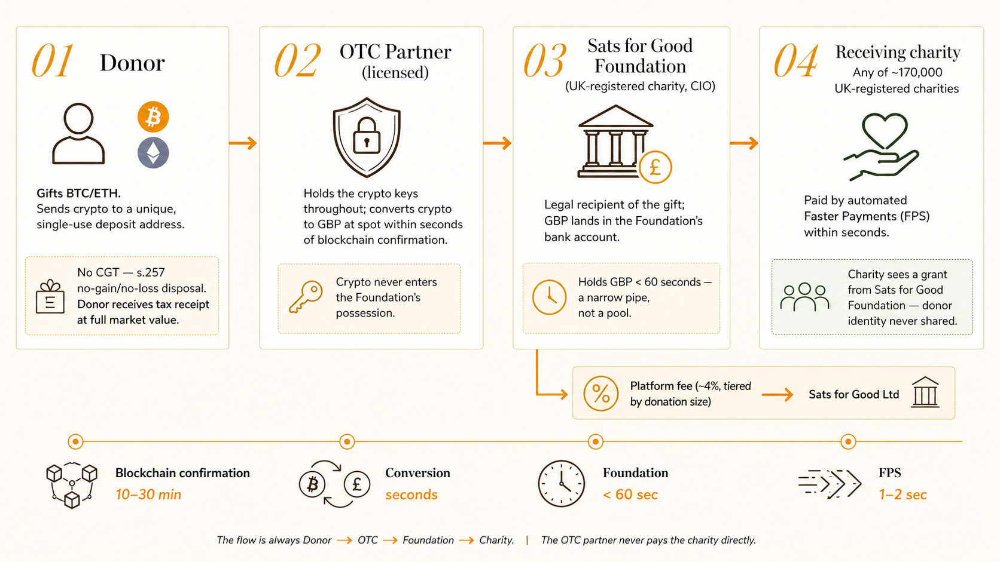

Bitcoin wealth, without the tax friction, into causes that matter.
A UK-native donor-advised fund for crypto philanthropy. Built for hodlers who want their appreciated assets to reach charities without triggering a CGT event, without surrendering their identity, and without having to pick a charity willing to touch crypto directly.
Built for hodlers who already know what they want to do.
Most Bitcoin hodlers with meaningful appreciated positions don't lack the desire to give. They lack the plumbing. Selling crypto to donate the cash triggers an 18–24% CGT event on the gain. Charities don't accept crypto directly. And every existing UK donation platform requires the donor to surrender their full identity before the gift can reach the cause.
The result, for the donor, is a small but persistent friction that kills the impulse — one more reason to "do it next year." For the charity, it is an entire category of wealth — young, growing, meaningfully concentrated — that never arrives.
The UK tax code already allows exactly this. Section 257 of the Taxation of Chargeable Gains Act 1992 treats a disposal of a chargeable asset to a charity as a no-gain, no-loss event — no CGT for the donor. HMRC has classified crypto as a chargeable asset since 2018. The legal route has been open for nearly a decade. What's missing is the platform.
Why this is the moment
UK crypto hodlers are sitting on an estimated £8–12bn in embedded unrealised gains entering 2025 — triangulated from HMRC's FY22–23 cryptoasset disposal aggregates, FCA October 2024 crypto-ownership research, and exchange-side balance disclosures. The annual CGT exempt amount sits at a decade-low £3,000. The tax drag has never been more acute for UK donors — and s.257 TCGA 1992 has never been more underused.
Three frictions between conviction and the gift.
Every UK crypto hodler who has tried to donate an appreciated position has hit at least one of these. Most have hit all three and given up.
Capital gains friction
Selling crypto to donate the cash triggers 18% CGT for basic-rate taxpayers, 24% for higher-rate. On a £10k gift with a £6k gain, the tax hit can be £1,440 — a wall that donors absorb reluctantly or walk away from.
Charity readiness
Most UK charities lack the treasury infrastructure, banking relationships, or trustee comfort to accept crypto directly. The few that do process it slowly and expensively, or rely on US-origin platforms that don't speak UK tax law.
Privacy exposure
Every existing UK donation platform surfaces the donor's full identity to the receiving charity by default. For many HNW donors — and for the cultural traditions that prize anonymous giving — this is the silent blocker.
The subtler point. Gifting crypto through an s.257 route does not just avoid CGT on the gift itself. It removes the gain from the donor's annual chargeable-gains calculation entirely. That can keep a donor under the £3k annual exemption across all their disposals, or keep them in the basic-rate band instead of tipping into higher-rate. The cascading saving is often larger than the headline one.
One legal route. One money flow.
The product is built around a single legal structure: the donor gifts crypto to Sats for Good Foundation, a UK-registered charity (CIO). The Foundation receives the asset, immediately converts it via a licensed over-the-counter (OTC) partner, and disburses the GBP proceeds as a charitable grant to any of approximately 170,000 UK-registered charities the donor nominates. The donor pays no CGT on the gift. The receiving charity never learns the donor's identity.
The donor flow
Step 1
Pick a charity. Any UK-registered charity on the Charity Commission register. No bilateral agreement required — the Foundation can grant to any of them as part of its charitable objects.
Step 2
Enter an amount. In crypto or GBP equivalent. The donor sees the full market value that will form the basis of their tax receipt, and the net grant the charity will receive after platform fee.
Step 3
Verify identity. Single KYC flow via our licensed partner. Required once per donor for AML compliance on the crypto-to-fiat leg.
Step 4
Send crypto. Donor is given a unique, single-use deposit address generated by the OTC partner on the Foundation's behalf. Address is never reused — privacy by design; quantum ready.
Step 5
Automated conversion. OTC partner auto-converts to GBP at spot market rate, settles to the Foundation's bank account within seconds of blockchain confirmation.
Step 6
Automated grant. Foundation's banking rail auto-initiates an FPS payout to the chosen charity within seconds of receipt. Total touch time for Foundation: under 60 seconds.
The money flow
The architecture is a narrow pipe, not a pool. Crypto never enters our possession — the OTC partner holds keys throughout. GBP sits in the Foundation's bank account for seconds, not hours. The Foundation is the legal recipient of the crypto gift (for s.257 purposes) but holds no operational balance.

| Stage | Who holds it | Duration |
|---|---|---|
| Donor → OTC address | OTC partner (BCB / Archax), on behalf of Foundation | Until blockchain confirmation (10–30 min) |
| Crypto → GBP conversion | OTC partner | Seconds |
| GBP → Foundation bank | Foundation | < 60 seconds before automated onward payout |
| GBP → receiving charity (FPS) | Receiving charity | 1–2 seconds (FPS) |
On privacy. The receiving charity never learns who the donor is. From their perspective, they received a standard charitable grant from Sats for Good Foundation. The donor's identity is held by the Foundation and the licensed OTC partner (both AML-compliant, both under confidentiality obligation). It is not shared with any receiving charity.
On the receipt. The donor receives a tax receipt showing the full market value of the gift at the moment of confirmation, with the blockchain transaction hash for verification. This is their evidence for self-assessment — yours to keep, or produce if questioned on tax relief.
A worked example
Scenario
A higher-rate taxpayer has realised £15,000 of gains this year on other disposals (shares, ETF rebalancing). They want to donate £8,000 of BTC held from 2019, cost basis £2,000, so a £6,000 gain.
Without us (sell BTC, donate the cash): total gains = £21,000 → less £3,000 annual exempt amount → £18,000 taxable × 24% = £4,320 CGT. The charity receives £8,000.
With us (gift BTC under s.257): the gift is a no-gain, no-loss disposal. It does not enter the donor's chargeable-gains calculation at all. Total gains = £15,000 → less £3,000 → £12,000 taxable × 24% = £2,880 CGT. The charity receives £7,680 (£8,000 minus our 4% platform fee).
Donor saves £1,440 in tax. Charity receives £320 less. The tax saving that would have gone to HMRC stays with the donor.
Multi-asset scope
The core product accepts Bitcoin, Ethereum, and other appreciating cryptoassets where the tax case is clearest. Stablecoins (USDC, USDT, DAI) are permitted as a convenience top-up alongside a primary gift — acknowledged in the UX, not part of the headline story. The CGT saving is null on stables by definition.
A niche that is already sizeable.
The UK HNW crypto-hodling cohort is small but dense, and the overlap with existing charitable intent is higher than in the retail crypto population. What follows is a conservative bottom-up construction — cohort population, annual giving, and platform-addressable share shown at each layer, with sources and methodology beneath the table.
TAM → SAM → SOM (UK, base case)
| Layer | Population | Avg giving | Volume |
|---|---|---|---|
| TAM UK HNW crypto hodlers with charitable intent |
150k–200k | £8k–£15k/yr | £1.5–4bn/yr |
| SAM With meaningfully appreciated positions |
30k–50k | ~£10k/yr | £300–500m/yr |
| SOM — Year 5 Realistic capture, UK-only |
3k–5k | £10k–£12k | £30–80m/yr |
Methodology — bottom-up build
TAM population (150–200k). Triangulated from three directions that converge: (i) FCA October 2024 crypto-research at ~12% UK-adult ownership (~6m total holders), filtered to the top decile by holding size (~600k) using Coinbase UK and Bitpanda UK 2024 disclosures on average vs median balance; (ii) Knight Frank Wealth Report HNW count (~620k £1m+ households) with a 25–30% crypto-overlap factor; (iii) CAF UK Giving Report HNW-segment charitable-intent filter (~35%).
SAM filter (20–25% of TAM). Subset with materially appreciated positions, derived from HMRC's FY22–23 cryptoasset disposal aggregate scaled to 2024 holdings.
Volume column — what it represents. At TAM and SAM, the number is the cohort's total annual charitable giving (across all asset classes), of which only a fraction is plausibly crypto-routed: ~10–20% at TAM, ~30–50% at SAM (appreciated crypto becomes the rational gifting asset). At SOM Y5, the number is platform-captured volume — what Bitcoin for Good actually processes — at the low end of US benchmarks for crypto-routed HNW giving.
The shape of the volume. US benchmarks (The Giving Block, Engiven 2021–2024) show ~80% of crypto-donation volume from <5% of donors — one to three anchor gifts per year typically drive over half of platform throughput. Y5 SOM is therefore modelled as two distinct populations:
Anchor gifts — 5–15 donors/yr at £100k–£1m+ = £3–10m/yr. Concierge-led acquisition.
Long-tail — 3–5k donors/yr at £5–15k = £25–60m/yr. Self-serve.
The shape bounds Year-1–2 variance — a single anchor gift can move the year — and drives GTM design: concierge for whales, product-led for the long tail.
Five addressable buyer groups
The HNW individual cohort sized above is the core, but it is not the entire market. Four other distinct buyer groups have material crypto exposure and unmet charitable-giving needs. Each carries its own product wedge, acquisition path, and unit economics. The same UK regulatory rails (CIO, OTC, FCA s.21, Charity Commission) serve all five — so adding a segment is product surface work, not new regulatory build.
1. HNW individuals Core
The TAM/SAM cohort sized above. Three sub-segments inside: gain-heavy hodlers (BTC/ETH 2015–2020), religiously-motivated givers (Muslim zakat, Christian regular giving), and privacy-first donors of any motivation who decline identity exposure to the receiving charity.
UK SAM: £300–500m/yr · Y5 SOM: £30–80m
2. DAOs / Web3 treasuries
Decentralised organisations and crypto-native cooperatives running governance-allocated charitable grants from treasury. Established precedent at Uniswap, Optimism, ENS, MakerDAO. Need compliance-grade UK disbursement, audit trail, and donor-side privacy.
UK-relevant: 20–50 entities, £500m+ aggregate treasury · Y3 revenue: £500k–2m
3. Crypto VCs / funds with realised gains
UK-domiciled crypto-focused VCs and hedge funds with lumpy carry events. Fund-level gift relief works on the same s.257 mechanic at a different scale. Carry holders face large personal CGT events that the platform cleanly resolves.
UK-relevant: 10–20 fund GP/LP entities · Y3 revenue: £500k–2m
4. Crypto-native corporates
Exchanges, market makers, custodians, treasury-allocating corporates. Donate appreciated treasury crypto to offset corporate gains; ESG narrative for the brand. Established models at Coinbase Giving, Kraken Charities, Block Giving — UK adaptations of those programmes are the entry surface.
UK-relevant: 30–80 corporates with material treasury · Y3 revenue: £500k–1.5m
5. Religious-giving communities
UK Muslim community paying annual zakat on crypto holdings (estimated UK Muslim zakat ~£200–400m annual giving; HNW segment with crypto exposure ~£50–100m); UK Christian regular givers; UK Jewish Tzedakah donors. Wedge is Sharia-certified routing, Christian-aligned receipt language, and structural anonymity for cultural giving traditions. Extends beyond the HNW cohort into mid-tier mass-affluent.
Crypto-relevant cohort across all three traditions: £80–150m/yr · Y5 routed: £15–30m
Across all five
Same regulatory stack, differentiated product surfaces and distribution channels (see Section 05). Segments 2–5 add an estimated £20–50m UK Y5 revenue incremental on top of the HNW Core — and sit alongside, not within, the revenue projections in the table below, which model Segment 1 only. The five-segment view is the fuller addressable picture; the projections are the conservative-anchor view.
Revenue projections — UK only
Three scenarios, Year 1 / Year 3 / Year 5. Fee assumption: 3.5% blended (tiered structure, 4% / 3% / 2%, in Section 05).
Revenue projections — UK + phased geographies
UAE Y2 (2027), Canada + Singapore Y3 (2028), Switzerland + Channel Islands Y4 (2029) for the six-market B2C platform. US enters Y3 (2028) as B2B-only — partnership and licensing, not a B2C platform — and is additive to the volume below. Each market carries its own wedge (detailed in Section 11). Each added B2C market is modelled with a phased ramp — first-year-of-operation throughput at 25–40% of trajectory run-rate — reflecting regulatory onboarding, OTC and banking-rail setup, and donor acquisition lead time.
Benchmark — The Giving Block (US)
Peak processing volume $125m in 2021; current run-rate ~$50m. The UK 6-market base case (£180m Y5) approaches TGB's all-time peak on a ~1/3 donor base — supported by a structurally stronger product surface: s.257 extinguishment vs. US FMV deduction, native UK tax-rail, privacy by default, and charity-agnostic disbursement to ~170k UK charities. The UK-only bull (£70m) sits comfortably inside TGB's current run-rate; the 6-market bull (£450m) is ~3.5× TGB peak, supported by five additional markets.
Multiple streams. One transaction.
The core fee is the biggest stream, but the platform is designed so that each donation accretes revenue through adjacent layers — API licensing, SaaS subscriptions, enterprise contracts, float income. The whole stack compounds with volume.
Tiered platform fee (the core)
| Donation size | Fee | Rationale |
|---|---|---|
| £0 – £10,000 | 4% | Covers KYC, OTC spread, banking rails, operations. Defensible as first-mover premium: no UK entity offers s.257-routed, privacy-by-default crypto gifting today. |
| £10,000 – £100,000 | 3% | Core HNW segment. Fixed costs amortise; margin improves. |
| £100,000+ | 2% | Institutional tier. Never prices out large gifts; meaningful £ on absolute basis. |
| Blended average | ~3.5% | Assumes the volume mix stays weighted toward mid-tier gifts. |
Adjacent revenue layers
API licensing
"Donate instead of sell" buttons embedded in Koinly, Divly, and Accointing at the tax-loss harvesting moment. Wallet integrations (Ledger Live, Trezor Suite). Exchange integrations (CoinCorner, Bitpanda UK). Per-transaction fees + revenue share.
SaaS — white-label DAF
Charities, religious organisations, and cause-specific bodies launch their own branded crypto donation page on our rails. Monthly SaaS £500–£5,000 + transaction fee.
Enterprise contracts
Corporate treasuries (crypto-native companies, ESG-led firms) donate appreciated crypto to offset corporate gains. Multi-year contracts at £10–50k/year plus transaction fee.
Float income
Transit GBP balances across Foundation accounts earn interest. Small per-transaction but scales meaningfully at £100m+ annual volume.
Anonymity premium (Y3+)
A premium donor tier offering additional structuring — multi-year planned giving, bequest integration, impact reporting — positioned around the privacy differentiator. Subscription-based.
Data licensing (Y4+)
Anonymised trend data sold to philanthropy researchers, the Charity Commission, Charities Aid Foundation. Small but high-margin.
Distribution stack — where donors actually arrive
Revenue compounds only if donors find the product at the moment they're thinking about a gift, not later via a Google search. The distribution stack has three layers, all filtered for crypto-relevance — surfaces where users already manage crypto, advisor channels that serve crypto-rich clients, and community channels with crypto-native audiences. Generic charity-tech and mass-market financial advice are deliberately excluded: their user bases aren't crypto-rich enough to justify the partnership cost.
Layer 1 — Embedded distribution ("donate instead of sell" at the disposal moment)
| Surface | Named partners | Crypto-relevance | Revenue model | Y3 potential |
|---|---|---|---|---|
| Crypto tax software | Koinly, Divly, Accointing, CoinTracker, CoinLedger, ZenLedger, Recap | 100% — users have crypto + active tax events by definition | Rev-share 30–50% of platform fee | £1–3m |
| Crypto wallets | Ledger Live, Trezor Suite, MetaMask, Phantom, Trust Wallet | 100% — users hold crypto natively; wallet is the asset surface | Rev-share + per-tx fee | £500k–2m |
| UK crypto exchanges | CoinCorner, Bitpanda UK, Kraken UK, Coinbase UK | 100% — captive UK HNW base with active CGT exposure; KYC already done | Rev-share | £1–3m |
| s.257-fluent tax counsel + crypto-tax specialists | RPC, Carter Backer Winter, KPMG Tax, Wright Vigar, Andersen Tax UK, Recap | High — the s.257-fluent firms already engaged for the launch tax opinion; specialist crypto-tax firms have 100% crypto-rich books | "Verified route" listing + small referral honorarium (advisors won't accept trail commissions) | £300k–700k |
| Crypto-native accounting / treasury software | Cryptio, Bitwave, Lukka, TaxBit Enterprise | 100% — purpose-built for crypto-native UK companies with treasury crypto. (Xero / QuickBooks / Sage explicitly excluded: <1% of their users hold treasury crypto.) | SaaS + per-tx | £200k–600k |
| UK will / estate platforms | Farewill, Octopus Legacy | Medium — UK bequest market is £3.4bn/yr; crypto bequests are a known executor pain point. UK-native only (Trust & Will / FreeWill are US). | Per-bequest fee + match-funding | £200k–500k |
Layer 2 — B2B SaaS to the UK charity sector
The UK's top 100 charities all want crypto capability and none have it. White-label crypto donation page on our rails, branded as the partner charity. £500–£5k/mo SaaS plus transaction fee. Inbound demand driven by the partner charity's own donor base; near-zero customer acquisition cost on our side. Top-50 conversion at ~60% over Y2–Y3 yields ~£360k/yr SaaS plus the transaction volume those charities route through us. Y3 total revenue: £1–3m, high margin, with the operational benefit that every white-label charity becomes a defensive moat — the next platform that arrives has to displace us.
Layer 3 — Channel partnerships (concierge access to anchor-gift donors)
| Channel | Named partners | Crypto-relevance | Revenue model | Y3 potential |
|---|---|---|---|---|
| UK private banks (concierge / anchor-gift channel) | Coutts, Hoare, Cazenove, Rothschild Wealth, Brown Shipley | 5–15% of UHNW book is crypto-rich — exactly the anchor-gift segment from Section 04. Not a volume channel: 5–15 gifts/yr at £100k–£1m+ each. | Rev-share on routed gifts | £500k–1.5m |
| Trust companies | Stonehage Fleming, Bedell Cristin, Mourant | Niche — UHNW family trusts occasionally hold crypto; charitable distributions are routine in their service. | Rev-share + structural advisory fee | £200k–600k |
| Family-office tech | Addepar, Masttro | Strong — these platforms aggregate UHNW crypto positions; the donate surface lives at the advisor's screen. Addepar explicitly supports crypto-asset reporting. | Rev-share + integration fee | £400k–1m |
| Crypto-native UK communities | UK Bitcoin Collective, Real Bitcoin Club London, Bitcoin Policy UK | 100% crypto-native by definition | Community sponsorship + affiliate code | £100k–300k (high LTV per acquired donor) |
| Tech-founder networks | YC UK alumni, Entrepreneur First, Founders Forum | Medium-high — high crypto-ownership rate in this population, especially Web3 / fintech-adjacent founders | Curated sessions → anchor-gift conversion | £200k–600k |
| UK Bitcoin podcasters / writers | What Bitcoin Did (Peter McCormack), Bitcoin Magazine UK, founder-network amplifiers | 100% — audience is by definition crypto-active | Sponsored segments + affiliate referral | £100k–300k |
| Accreditation / legitimacy partners | UK Sharia advisory boards, Muslim Charities Forum, equivalent Christian-giving bodies | These don't drive volume directly — they grant permission for religious-giving products (zakat, waqf) | No direct revenue | Unlocks £500k–2m elsewhere |
Combined Y3 incremental revenue from the distribution stack
Layer 1 (embedded) ~£3.2–9.8m + Layer 2 (B2B SaaS) ~£1–3m + Layer 3 (channels) ~£1.5–4.3m = £5.7–17.1m Y3 incremental revenue, all UK-only. By comparison, adding two additional geographic markets at Y3–Y4 as B2C platforms yields perhaps £2–5m incremental at maturity, with significantly higher regulatory and operational cost. The distribution stack is the bigger lever per pound invested.
Revenue structure, not revenue promise. The stack is designed so that adjacent streams add ~30% to core fee revenue by Year 3, rising to ~40% by Year 5. Full cost structure and profitability modelling is in Appendix A.
No UK-native s.257 DAF for crypto.
The crypto-philanthropy category is growing, but no UK player offers direct-grant crypto gifting routed through the s.257 CGT-relief structure with privacy by default. Existing competitors fall into three shapes: US-originated crypto DAFs that don't speak UK tax law fluently and expose donor identity to the receiving charity; UK-originated cash platforms with no crypto rail; and one emerging UK crypto player (Evergive) running a perpetual-yield / endowment model rather than direct-grant. The wedge is the combination: UK-native + s.257 direct-grant + privacy-by-default + any charity.
| Competitor | Origin | Entity | Product model | Where we differ |
|---|---|---|---|---|
| The Giving Block | US (Shift4) | For-profit (Shift4 subsidiary) | Per-charity accounts; donor→charity direct | No s.257 structure, donor ID exposed to charity, UK tax handling weak |
| Engiven | US | For-profit SaaS | DAF-adjacent, US 501(c)(3)-focused | Not structured for UK charity law; no UK banking rail |
| Endaoment | US | Public charity (501(c)(3)) | Crypto-native public charity / DAF | US-only. Their pattern is our inspiration; UK-native execution is the wedge |
| Crypto for Charity | US (Fidelity Charitable) | Charity programme (DAF under Fidelity Charitable) | Umbrella DAF via Fidelity | US only; Fidelity-branded; no UK route |
| Evergive | UK | For-profit Ltd + independent DAF partner (hybrid) | Perpetual-yield model: donation invested (in BTC), monthly yield granted to chosen charities | Different product: endowment/yield, not direct grant. Bitcoin-only. No s.257 direct-grant routing surfaced. Principal never reaches the charity — only the yield |
| Charities Aid Foundation (CAF) | UK | Charity + subsidiary bank (hybrid) | Long-standing charity + bank + DAF | Institutional, slow crypto adoption, donor ID visible, not positioned for HNW crypto |
| Stewardship | UK | Registered UK charity | Christian-coded DAF | Narrow audience fit; no crypto rail |
| JustGiving | UK | For-profit (Blackbaud subsidiary) | Retail cash donation incumbent | No crypto; full donor ID exposure; no s.257 positioning |
| GoFundMe | US / UK | For-profit | Peer-to-peer crowdfunding; charity arm | No crypto; personal-cause first, not charity-first; full donor ID exposure |
What they charge
Platform fees vary wildly by model — some charge the donor, some the charity, some use "optional tip" mechanics, some layer DAF admin fees on top. Headline fees below; card-processing fees apply on top for most cash platforms.
| Platform | Entity | Crypto | Platform fee | Effective to charity |
|---|---|---|---|---|
| The Giving Block | For-profit (Shift4 sub) | ✓ | ~2.5% transaction fee on crypto donations | ~97.5% |
| Engiven | For-profit SaaS | ✓ | ~3% donor fee; enterprise tier flat-rate | ~97% |
| Endaoment | Public charity (501(c)(3)) | ✓ | 0% on entry, ~1% annual DAF admin | ~99% + time drag |
| Crypto for Charity | Charity programme (Fidelity Charitable DAF) | ✓ | ~0.6% annual DAF admin + Fidelity fund fees | ~99% + time drag |
| Evergive | For-profit Ltd + DAF partner (hybrid) | ✓ (BTC only) | 0% stated platform fee (DAF admin on backend; optional donor tip; optional card-fee cover) | Yield only — principal retained in perpetuity |
| Charities Aid Foundation (CAF) | Charity + subsidiary bank (hybrid) | — | ~4% on one-off Charity Account donations; 0% on standing orders | ~96% |
| Stewardship | Registered UK charity | — | ~4% on DAF contributions, reducing at scale | ~96% |
| JustGiving | For-profit (Blackbaud sub) | — | 0% platform fee on fundraising pages + 1.9% + £0.20 card fee; charities on a £39/mo subscription plan | ~96–98% |
| GoFundMe (UK) | For-profit | — | 0% platform fee + 1.9% + £0.20 transaction fee; optional donor tip | ~96–98% |
| Bitcoin for Good | UK CIO + UK OpCo + SG HoldCo (hybrid) | ✓ | 4% ≤£10k · 3% £10k–£100k · 2% >£100k (blended ~3.5%); no card fees | ~96.5% |
Fees as of mid-2025; verify before use in any donor-facing materials. "Effective to charity" assumes a single £10,000 gift on each platform's most common donor path; real outcomes vary with payment method, subscription tier, and whether the platform routes through a DAF.
The shape of the gap
A UK-native crypto donor-advised fund that (i) leads with the s.257 tax structure, (ii) treats donor privacy as a structural default rather than a setting, and (iii) is charity-agnostic (grants to any of ~170k UK-registered charities without per-charity onboarding) does not exist today. That three-pillar combination is the positioning.
Twelve to eighteen months of regulatory head-start.
The defensibility here is not technological. The plumbing is buildable by any competent team in three months. The defensibility is in the regulatory, banking, and charity-law stack — pieces that take real calendar time and real reputation to assemble, particularly in a tightening UK crypto regulatory climate.
Written s.257 tax-counsel opinion
Commissioned from RPC or Carter Backer Winter before launch. Scope deliberately narrow (s.257 applied to OTC-mediated crypto gift; Ltd–Foundation services agreement arm's-length test; GAAR exposure), commissioned on a fixed fee after free scoping calls with 2–3 firms. Becomes the defensible legal basis that no US competitor holds. 2–3 months to procure; £10–15k.
Charity Commission CIO registration
Sats for Good Foundation, approved with a clear cryptoasset-receiving charitable objects clause. The Commission does not pre-engage on novel structures — the application stands on its own contents, and a credibly-drafted package depends on the right trustee bench, a defensible services agreement, and the tax-counsel opinion already in hand at filing. 3–6 months of casework review. No shortcut; competitors must assemble the same package and wait the same.
UK banking for a crypto-adjacent charity
Banking partners willing to serve a crypto-adjacent registered charity — Modulr, ClearBank, and Charities Aid Foundation (CAF) Bank — are the real bar in a de-risking climate. 6–12 months of relationship-building, and difficult to replicate without prior institutional credibility.
FCA financial-promotion approver
Either via a licensed OTC's permissions or an independent approver (s.21 FSMA). Non-trivial to arrange for a new entity without a track record.
Charity disbursement rail
Charities Aid Foundation (CAF) Donate access (~170k UK charities with verified bank details) licensed as a B2B service. Plus our own onboarded hot-list of top 500 charities. Competitors must build or license the equivalent.
Founder distribution
Access to UK Bitcoin, HNW, and religious-giving communities through founder network. Relational, not technical — but genuinely hard to replicate cold. First 500 donors come from here.
Net replication cost for a competitor entering UK from scratch: 12–18 months and £300k+ of setup before first donation. We intend to compound this lead across geographies — each expansion market has its own local moat (see Section 11).
A secondary moat: privacy as architecture
Because the Foundation is the legal recipient of the crypto gift, and because the grant to the end charity is a standard charity-to-charity disbursement, donor identity never leaves us by structural necessity. Competitors who built on the per-charity-account pattern (The Giving Block) cannot retrofit this. It is not a setting; it is a property of the structure.
The stack behind every conversion.
All candidates named below. None are signed at time of writing. The architecture is deliberately modular so that each layer can be swapped without rebuilding the whole.
Crypto-to-fiat conversion (OTC)
BCB Group
UK-licensed OTC with MLR registration. Institutional liquidity. Programmable custody API. First candidate.
Archax
UK FCA-authorised digital-asset exchange. More regulatory depth, newer to philanthropy-adjacent flows. Second candidate.
CoinPass
UK-specialist crypto broker. Smaller scale; useful as backup or for lower-volume tail.
Banking rails
The Foundation needs a UK-regulated operational account willing to accept inbound OTC-settled GBP and initiate high-volume Faster Payments to charities. Six candidates, two primary tracks — EMI-first (speed, programmability) or charity-native (reputation, sector fit). Multiple relationships in parallel for resilience against de-risking.
Modulr Primary
Regulated EMI with programmable payment rails and FPS access. Charity-friendly. Default candidate for the Foundation's operational account.
ClearBank
UK clearing bank, crypto-aware, direct Bank of England settlement access. Higher bar to onboard; worth it for settlement reliability.
Charities Aid Foundation (CAF) Bank
Charity-native banking (a separate entity from Charities Aid Foundation (CAF)'s DAF arm). Natural fit for a CIO; reputation-positive.
Unity Trust Bank
UK bank specialising in the charity, social enterprise and third sector. Strong cultural fit for a CIO; limited crypto-flow precedent — needs a relationship conversation up front.
Triodos Bank UK
Ethical, sustainability-mandated UK bank with a substantial charity client base. Slower onboarding; useful as a second charity-native rail once the flow is proven.
Starling Bank Business
UK digital bank with a full banking licence. More crypto-tolerant than the high-street incumbents; API-first. Backup rail for smaller-value outbound flows.
Compliance & identity
Sumsub / Onfido KYC
Either as KYC vendor for donor onboarding. Shared with OTC partner so donors complete one flow. Sumsub preferred for crypto-specialism.
Charities Aid Foundation (CAF) Donate Disbursement
Licensed as commercial B2B service (separate from any DAF umbrella relationship). Gives us instant payout to ~170k UK-registered charities.
Legal & tax
Stone King · Bates Wells
Specialist UK charity-law firms. One of these instructs the CIO incorporation and the Ltd–Foundation services agreement.
Kingsley Napley · Mishcon de Reya
Crypto-regulation counsel for FCA and promotion-compliance work. Either is strong.
RPC · Carter Backer Winter · KPMG Tax
Written tax-counsel opinion on the s.257 / DAF structure. Non-optional deliverable before launch.
Open Banking partners Retries
Confirmation of Payee API (Modulr, ClearBank) for pre-payout bank-detail validation. Catches ~95% of stale charity-bank-detail errors before money moves.
Clean at launch. Designed for a tighter 2028 regime.
The regulatory model at launch is structurally conservative — we never operate as a crypto exchange, never hold keys, never touch client crypto. The licensed OTC partner carries the MLR-registered activity. The Foundation's role (legal recipient of a charitable gift; grant-maker to UK charities) is activity the Charity Commission has regulated for centuries.
The regulatory stack at launch
Introducer model Clean
Licensed OTC partner handles all crypto-to-fiat exchange. Foundation is the legal recipient of the gift but does not exchange crypto as principal. No MLR registration required on our side.
CIO registration In progress
Charitable Incorporated Organisation via Charity Commission. One-shot application; 3–6 month casework review. Umbrella DAF (Prism the Gift Fund, NPT UK) runs in parallel as a launch path that lets volume start while the CIO sits in the queue.
Financial promotions Approver engaged
s.21 FSMA approval routed via the licensed OTC's permissions or an independent s.21 approver. Active compliance review for every donor-facing surface.
s.257 TCGA 1992 Opinion pending
Written tax-counsel opinion commissioned. The opinion becomes the durable, defensible basis for the platform's core tax claim.
The structure isn't novel — it's the default for big giving
The commercial-entity + charity-entity pairing is well-trodden ground. The largest DAF in the world, the UK's largest charity-services provider, and household-name trading charities all operate variants of this pattern. The pattern is Charity Commission-friendly, HMRC-neutral, and investor-familiar.
| Organisation | Charity arm | Commercial / trading arm | Mechanic |
|---|---|---|---|
| Fidelity Charitable US | Fidelity Charitable (501(c)(3) public charity — the largest DAF in the world, ~$50bn AUM) | Fidelity Investments (for-profit asset manager) | Commercial entity provides platform, investment, and admin services to charity under an arm's-length services agreement; charity pays fees. |
| Schwab Charitable US | Schwab Charitable (independent 501(c)(3) DAF) | Charles Schwab & Co. (for-profit broker-dealer) | Identical pattern to Fidelity. Independent board; Schwab provides platform services on contract. |
| Vanguard Charitable US | Vanguard Charitable (501(c)(3) DAF) | Vanguard Group (for-profit asset manager) | Vanguard Group administers investments for the charity; service-fee structure; separate boards. |
| Charities Aid Foundation (CAF) UK | Charities Aid Foundation (CAF) — registered UK charity, oldest UK DAF sponsor | CAF Bank Ltd (for-profit subsidiary bank) and CAF-branded commercial services | Charity owns/contracts with the commercial bank; profits flow back to the charity. Established UK precedent of the pattern. |
| National Trust UK | The National Trust (registered UK charity) | National Trust (Enterprises) Ltd — trading subsidiary | Trading subsidiary runs shops, cafés, holiday cottages; gift-aids 100% of profits back to the charity. Classic UK trading-subsidiary pattern. |
| Cancer Research UK UK | Cancer Research UK (registered UK charity) | Cancer Research UK Trading Ltd — subsidiary | Subsidiary handles commercial activities (merchandise, sponsorships); gift-aids profits to parent charity. |
| Mozilla US | Mozilla Foundation (501(c)(3) non-profit) | Mozilla Corporation (wholly-owned taxable subsidiary — builds Firefox) | Foundation owns Corporation; Corporation's profits ultimately benefit the Foundation's mission. Tech-sector precedent of the pattern. |
| Newman's Own US | Newman's Own Foundation (501(c)(3)) | Newman's Own Inc. (food company) | Foundation owns the for-profit food company outright; 100% of company profits donated to the Foundation annually. Pattern codified by federal law in 2018 for private-foundation business holdings. |
| Bitcoin for Good | Sats for Good Foundation (UK CIO) | Sats for Good Ltd (UK OpCo), wholly-owned subsidiary of Sats for Good Pte Ltd (Singapore HoldCo) | UK OpCo licenses platform + services to Foundation under an arm's-length services agreement at HMRC-compliant transfer pricing. See corporate structure below for the full spine. |
The structural variants differ (parent-subsidiary, sibling-services, wholly-owned taxable), but the underlying pattern — a charity + a commercial entity cooperating under documented terms — is the default for large-scale giving infrastructure, both sides of the Atlantic.
Corporate structure — UK front, Singapore spine
The commercial spine behind the UK-facing charity brand is a four-entity setup: a UK operating company, a UK CIO, a Singapore holding company, and a Singapore founder-advisory company. UK donors see a UK charity and a UK platform — nothing else. Profit, intellectual property, and founder extraction happen offshore, within clearly documented arm's-length arrangements.
This is the pattern Shopify, Stripe, Wise, and Revolut all use in variants (UK-front-office + offshore-IP-holding); it is structurally conservative and investor-familiar. The founder is a Singapore citizen and Singapore tax resident, which turns the most common weakness of an offshore holding company — economic substance — into a settled fact from day one.
| Entity | Jurisdiction | Ownership | Role |
|---|---|---|---|
| Sats for Good Pte Ltd HoldCo | Singapore | Founder-owned | Owns the IP, brand, platform code. Holds 100% of the UK OpCo shares. Receives IP-licensing fees and dividends from UK. |
| Sats for Good Ltd UK OpCo | United Kingdom | Wholly-owned subsidiary of SG HoldCo | Operates the UK-regulated platform. Holds the FCA s.21 promotions arrangement, banking rails, OTC contract. Contracts with the Foundation for platform services. |
| Sats for Good Foundation UK CIO | United Kingdom | Legally independent — not owned by any other entity in this group | Registered UK charity. Legal recipient of every donation under s.257 TCGA 1992. Independently governed by trustees; contracts the UK OpCo on arm's-length terms for services. |
| VicariousCore Pte Ltd ConsultingCo · shared across ventures | Singapore | 100% founder-owned; separate from SG HoldCo | Invoices SG HoldCo for founder's strategic / advisory services. No employment relationship between the founder and any operating entity — all founder value extracted through this route. |
Money flow
Gift leg — donor to charity
1. UK donor gifts crypto → Sats for Good Foundation (UK CIO). Full s.257 relief preserved; the
recipient is a UK-registered charity governed by independent trustees.
2. Foundation pays a tiered platform-services fee (4% / 3% / 2%, blended ~3.5%) to Sats for Good Ltd (UK OpCo)
under an arm's-length services agreement. This is the Foundation's only material expense line.
3. Foundation disburses the balance to the donor-chosen end charity in GBP via Faster Payments.
Profit leg — OpCo to founder
4. UK OpCo pays UK corporation tax (25%) on net taxable profit. Prior to that, it deducts an
arm's-length IP-licensing fee / management charge to SG HoldCo.
5. UK OpCo dividends post-tax profit to SG HoldCo (0% UK withholding under UK–Singapore double-tax treaty).
6. SG HoldCo pays consulting/advisory fees to VicariousCore Pte Ltd for the founder's strategic work.
SG HoldCo taxed at 17% on its net SG profit (with potential reduction under SG's IP Development Incentive if qualifying).
7. VicariousCore Pte Ltd pays SG corp tax at 17% on net. Remaining cash dividended to the founder at 0% personal tax,
under Singapore's territorial tax regime for SG-resident individuals.
Founder extraction is through consulting fees — never salary. No UK or SG operating entity pays the founder a wage. All founder remuneration is structured as fees paid by SG HoldCo to VicariousCore Pte Ltd for genuinely-rendered strategic services, documented with deliverables and retainer terms. This avoids UK employment tax exposure entirely and keeps personal extraction cleanly within the Singapore tax perimeter.
Why this works from Year 1 with 100% UK-donor capture
- Donor sees only the UK front. The brand, the website, the charity number, the legal recipient — all UK. The offshore holding layer is invisible to the donor flow.
- s.257 tax relief is preserved. The legal recipient of every gift is a UK-registered charity with independent trustees. The offshore shareholding of the OpCo is immaterial to the tax treatment of the donation.
- FCA s.21 approval sits with the UK OpCo. The Singapore entities never communicate with UK donors. All financial promotions flow through the UK-regulated entity, as the FCA regime requires.
- Charity Commission scrutiny focuses on the UK CIO. That CIO is legally independent, trustee-governed, not owned by any group entity. Its supplier being a subsidiary of a Singapore parent is not structurally unusual — many UK charities contract with offshore-owned service providers.
Three structural constraints — and how each is met
Singapore economic substance Met
Singapore tax authorities and UK CFC rules both require real SG activity for the HoldCo to be respected for tax purposes. The founder is a Singapore citizen and tax resident — making substance immediate, not manufactured. Genuine strategic decision-making sits in Singapore; office and employee footprint scales with the business.
Transfer pricing Documented
Every UK→SG fee (IP licensing, management charge, consulting fee from SG HoldCo to VicariousCore) must be arm's length under OECD BEPS / HMRC rules. A written transfer-pricing study from a Big Four practice (Deloitte SG or EY SG recommended; ~£10–25k initial, annual refresh) fixes the fee basis and documents it for HMRC audit.
Charity independence By design
The UK CIO must be visibly independent of the commercial group for the Charity Commission to be comfortable. At least three unaffiliated trustees, documented arm's-length services agreement with UK OpCo, minuted board decisions — the Commission's standard independence tests, applied properly from day one.
Illustrative tax efficiency
Simplified walk on £100 of distributable profit generated by the UK OpCo — compared across three structural options. Numbers are indicative; real outcomes depend on transfer-pricing split between UK retention and SG migration, which is determined by the TP study.
| Structure | UK corp tax | SG corp tax | Personal tax | Founder keeps |
|---|---|---|---|---|
| Pure UK + UK salary | £25 | — | ~£33 (income tax + NI) | ~£42 |
| Pure UK + UK dividends | £25 | — | ~£30 (dividend tax at additional rate) | ~£45 |
| UK OpCo + SG HoldCo + VicariousCore Pte Ltd | ~£15 (on UK retention portion) | ~£14 (on SG migration + ConsultingCo) | £0 (SG-resident, dividend extraction) | ~£71 |
The SG line assumes 40% of OpCo profit is legitimately migrated to SG HoldCo via arm's-length IP licensing; the balance stays in the UK and pays UK corp tax. A more conservative TP outcome (20% migration) yields ~£60 retained; an aggressive one (60%+) attracts HMRC challenge and is off-table.
Incorporation sequence
Incorporate Sats for Good Pte Ltd (SG HoldCo)
1–2 weeks via a Singapore formation agent. Shareholding issued to founder. Basic SG resident director already in place (founder).
Incorporate Sats for Good Ltd (UK OpCo)
Companies House registration; sole shareholder = SG HoldCo from the start. Separate from Foundation setup.
Incorporate VicariousCore Pte Ltd (SG ConsultingCo)
Separate Singapore Pte Ltd, 100% founder-owned. Retainer agreement with SG HoldCo for strategic/advisory services. Documented deliverables and rate card.
Register Sats for Good Foundation (UK CIO)
Charity Commission application (3–6 months). Stone King or Bates Wells instructs. Trustees appointed. Umbrella DAF as fallback if timeline slips.
Commission transfer-pricing study
Deloitte SG or EY SG engagement. Covers UK OpCo → SG HoldCo licensing fee, plus SG HoldCo → VicariousCore consulting fee. Deliverable before first material intercompany invoice. ~£10–25k; annual refresh.
Services agreements in place
UK OpCo ↔ UK CIO services agreement (platform + admin fee). UK OpCo ↔ SG HoldCo IP-licensing agreement. SG HoldCo ↔ VicariousCore consulting retainer. All signed before any commercial activity.
Threats, ranked by probability (5-year horizon)
Political-strategist lens. UK crypto regulation is tightening under a revenue-hungry Treasury and a consumer-protection-leaning FCA. The cumulative direction matters more than any single event. Architecture is designed to survive threats 1–3 by default.
| # | Threat | Probability | Impact |
|---|---|---|---|
| 1 | FCA extends mandatory authorisation to introducer model | 60–70% | Medium |
| 2 | UK banking further de-risks crypto-adjacent charities | 50–60% | Medium-high |
| 3 | HMRC publishes DAF-crypto-specific anti-avoidance guidance | 30–40% | Medium |
| 4 | MiCA-style rules harmonised into UK post-Brexit | 30–40% | Low-medium |
| 5 | Charity Commission issues specific crypto-donation guidance | 20–30% | Low-medium |
| 6 | Crypto made a s.431 "qualifying investment" (Income Tax relief) | 15–20% | Positive upside |
| 7 | GAAR invoked on the platform structure | 5–10% | High if triggered |
| 8 | UK abolishes CGT on crypto disposals specifically | 2–3% | Erodes core thesis |
| 9 | s.257 gift relief withdrawn for cryptoassets | 1–2% | Catastrophic |
| 10 | UK abolishes CGT entirely | <1% | Catastrophic |
Strategic response. Design for a tighter 2028 regime. Everything we build now should survive threats 1, 2, and 3 as default (they are the plausible, near-term trajectory). Threats 4–6 are manageable or positive. Threats 7–10 are tail risks too remote to drive architecture.
What happens next.
The real gates — the four pieces of work that must land before the first donation can complete. Company formation, services agreements, charity disbursement licensing, and the public launch motion all run alongside these, but they are execution, not strategy. What follows is.
Obtain written tax-counsel opinion
Specialist UK tax counsel engaged. Opinion required on the s.257 application to the full OTC-mediated gift flow, on the Ltd–Foundation services agreement, and on GAAR exposure. RPC, Carter Backer Winter, KPMG Tax shortlisted. This gates the product — nothing ships before the opinion is in hand. 2–3 months. £10–15k.
Register the Foundation and seat trustees
Sats for Good Foundation incorporated with the Charity Commission as a CIO. Charitable objects clause drafted to cover crypto-asset receipt and grant-making. Three independent trustees appointed: one charity-sector veteran, one crypto-sector professional, one tax or legal background. Stone King or Bates Wells instructs. 3–6 months. If timeline slips, Prism the Gift Fund or NPT UK as umbrella fallback.
Lock the OTC and banking partnership
BCB Group (primary) or Archax (backup) for licensed crypto-to-fiat conversion. Modulr (primary) or Charities Aid Foundation (CAF) Bank (backup) for the Foundation's programmable payout rail. These two agreements are the conversion spine — without them the whole product is theoretical. Confirmation-of-Payee integration sourced from the banking partner. 2–3 months in parallel.
Private donor cohort
Ten to twenty HNW pilot donors identified through founder network. Private beta before any public launch. The cohort validates the end-to-end flow, surfaces product and language friction, and generates the first-volume credibility that underwrites the public launch narrative. This is also the user research — done properly, not as a compliance tick.
The product compounds.
UK launch in 2026 is the beachhead. Growth runs along three compounding vectors: product (adjacent features and Horizons, below), distribution (embedded surfaces, B2B SaaS, and channel partnerships — detailed in Section 05), and geography (replicating the rail in ordered markets, next). The distribution vector is the largest UK-only growth lever per pound invested; this section covers the geographic vector.
Geographic expansion — four wedge archetypes
Outside the UK, s.257 extinguishment does not exist. Each market must lead with its own wedge — and that wedge is rarely a tax-relief argument. Four archetypes recur across candidate markets; most fit one or two, and a handful (UAE, Singapore) fit three.
i. Tax-mitigation markets UK · Canada · Australia
Markets with CGT regimes and statutory charitable-gift relief. Wedge mirrors UK at the structural level — capital-gains extinguishment on appreciated gifts to qualifying charities — using each jurisdiction's own statute. UK: s.257 TCGA 1992. Canada: s.38(a.1) ITA, "qualifying capital property" zero-inclusion rate. Australia: DGR framework with CGT-event offset. Same product, different local statute, same donor motivation: tax efficiency + ease.
ii. Religious-obligation markets UAE · Singapore · Saudi · Malaysia · Indonesia
0%-CGT markets where the tax pitch is null. Wedge is religious-obligation fulfilment for the Muslim cohort — Sharia-certified zakat infrastructure for crypto holdings (2.5% of qualifying assets annually, lunar-calendar timed), and waqf-compatible perpetual endowment rails. Sharia-board accreditation is the regulatory gate, not the tax authority. Christian (Tzedakah for Jewish, tithing for Christian) equivalents exist in adjacent markets but are smaller addressable.
iii. Privacy-architecture markets Switzerland · Channel Islands · Germany
Markets with no CGT (or a narrow-window CGT) but strong privacy culture and HNW density. Wedge is the same structural anonymity that the Foundation-as-legal-recipient pattern produces in the UK — donor identity never reaches the receiving charity by structural necessity. Resonates with donor populations who already use trust structures, banking secrecy, or post-WWII privacy norms. Switzerland and Crown Dependencies: 0% personal CGT. Germany: 0% after 12-month hold, with secondary short-hold-mitigation use case inside the window.
iv. Cross-border expat-philanthropy markets UAE · Singapore · Hong Kong · Switzerland
Markets with dense expat-HNW populations giving to home-country charities. Wedge is multi-currency, multi-jurisdiction charity routing — a Pakistani expat in Dubai giving to a Pakistani charity, a UK expat in Singapore giving to a UK charity, a German in Geneva giving to a German charity. Single KYC, single platform, multiple destination jurisdictions. Compounds with the religious-obligation wedge in Muslim markets and the privacy wedge in Switzerland.
The revised roadmap
Reordered by (opportunity size × structural wedge × regulatory cost). UAE promoted ahead of Canada because the religious-obligation wedge is structurally stronger than a tax-mitigation copy of the UK mechanic. Switzerland and Channel Islands added on the basis of privacy + HNW density. US repositioned as B2B-only (next sub-section). Australia and Germany held as Y5 watch markets.
| Market | Year | Wedge archetypes | Local moat |
|---|---|---|---|
| United Kingdom | 2026 · Y1 | Tax-mitigation (s.257) | See Section 07 |
| UAE | 2027 · Y2 | Religious-obligation + cross-border expat | DIFC/ADGM charitable foundation + Sharia board sign-off + VARA registration · strongest non-UK moat |
| Canada | 2028 · Y3 | Tax-mitigation (s.38(a.1) ITA) | CRA tax opinion + Canadian Registered Charity + federal banking · bilingual compliance (Quebec) is a secondary moat |
| Singapore | 2028 · Y3 | Religious-obligation + cross-border expat + family-office hub | IPC status + MAS licensing + MUIS partnership · family-office tax-incentive integration (13O/13U) |
| Switzerland | 2029 · Y4 | Privacy-architecture + cross-border expat (European HNW) | Swiss foundation registration + FINMA introducer arrangement · Geneva private-bank partnership |
| Channel Islands / Crown Dependencies | 2029 · Y4 | Privacy-architecture + trust-structure integration | Jersey/Guernsey/IOM charitable foundation + trust-company integration · niche but high-value per donor |
| Australia | 2030 · Y5 watch | Tax-mitigation (DGR) | DGR + ATO opinion + AUSTRAC registration · proceed only if Y3–Y4 capacity allows; opportunity real but not differentiated |
| Germany | 2030 · Y5 watch | Privacy + short-hold CGT mitigation | Gemeinnützige Stiftung + BaFin financial-promotion clearance · charity sector is conservative |
| United States | 2028 · Y3 — B2B only | Partnership / licensing only | See sub-section below |
| Stretch (Y5+) | — | Israel (Tzedakah + tech-founder), Saudi/Malaysia/Indonesia (zakat), Hong Kong (cross-border + privacy) | Watch list; entry contingent on Y3–Y4 platform stability |
United States — B2B only, not B2C
The US opportunity is large. US crypto-philanthropy peaked at ~$500m–1bn/yr; the addressable market is ~10–20× the UK. But B2C entry would put us as the sixth platform in a contested category where the UK structural wedge doesn't translate. US already has FMV deduction (table stakes, not differentiation); donor anonymity is partial because of state-level disclosure rules; DAFs are mature. Direct competition with The Giving Block, Engiven, Endaoment, Fidelity Charitable, and Crypto for Charity for a wedge that's already partially solved.
The smart US play is B2B partnership and licensing — high margin, low risk, faster to revenue, none of the cost of building a US donor base from cold.
| Mode | Mechanic | Risk | Speed to revenue | Y5 potential |
|---|---|---|---|---|
| Privacy-layer licensing | Sell the Foundation-as-legal-recipient + KYC-isolation pattern to US platforms (The Giving Block, Endaoment) as a white-label privacy upgrade | Low | 6–12 months | £500k–2m |
| Cross-border donor pathway | UK donor → US 501(c)(3); US donor → UK charity. Both routed through dual-rail compliance. Niche but unique to Bitcoin for Good. | Low-medium | 12–18 months | £1–3m |
| Compliance-as-a-service | License the s.257-equivalent infrastructure (donor-side KYC, charity-side disbursement, audit trail) to US DAFs and crypto-native charities | Low | 12 months | £200k–1m per partner; 3–5 partners by Y5 = £1–4m |
| Combined US B2B revenue | — | — | — | £2.5–9m by Y5 |
Compare against B2C US entry: ~£300k regulatory and operational setup before first donation (501(c)(3) + state-by-state solicitation registration + IRS determination letter + US KYC + US banking); 24–36 months to material revenue; competing against five entrenched incumbents for a partially-solved wedge.
Product expansion — three horizons
Horizon 1 · Year 1–2
Donor-facing product features. Acquisition surfaces (embedded distribution into Koinly, Ledger, exchanges) are detailed separately in Section 05.
Donor dashboard
Lifetime giving across all gifts, total CGT saved, charity impact reports rolling in, blockchain confirmation receipts archived. Closes the loop and lifts donor LTV.
Tax-receipt + self-assessment helper
Auto-generated receipt with FMV at confirmation and blockchain hash, plus a pre-formatted entry for the donor's CGT self-assessment. Reduces compliance friction and surfaces the tax saving on every gift.
Community cause funds
Themed pooled DAFs: UK Food Bank Fund, Climate Coalition, emergency response funds. Endaoment pattern, translated for UK.
Charity profile pages
Any UK charity can claim a profile, add a crypto-accepted badge, receive donations. Charity-pull acquisition, not just donor-push.
Recurring giving
"Donate 1% of my BTC portfolio monthly." Dollar-cost-average charity. Subscription dynamics lift donor LTV.
Tax-optimisation module
Analyses donor's Koinly / CoinTracker data to recommend which asset to donate for maximum CGT saving. Premium tier.
Horizon 2 · Year 2–3
White-label DAF
Charities, faith-based organisations, cause bodies launch their own branded crypto donation page on our rails. SaaS + transaction fee.
Corporate giving
Crypto-treasury companies donate appreciated positions to offset gains. Enterprise contracts.
Impact reporting loop
Charity sends back "here's what your £X funded" update, surfaced in donor dashboard. Closes the loop most charity platforms never close.
Planned / legacy giving
Bequest integration with Farewill, Octopus Legacy. Crypto held beyond donor's lifetime, distributed per registered instructions.
Payroll crypto giving
Integrates with HiBob, Rippling, BitWage. Employer-matched crypto donation from salary.
On-chain receipts
Optional verifiable on-chain attestation. Useful for ESG-reporting corporates, DAO treasuries, and crypto-native credibility.
Horizon 3 · Year 3–5
Waqf-as-a-Service
Islamic perpetual endowments — principal preserved, yield disbursed annually. Sharia-board overseen. Unique defensible vertical none of our Western competitors can replicate culturally.
Generalist tax-efficient giving
Same s.257 mechanics work for listed shares, unit trusts, land, art. Crypto was the wedge; the platform is the infrastructure.
Family-office tooling
Multi-generational DAF management, allocation rebalancing, impact reporting. Enterprise SaaS.
Year 5 has five natural buyers.
Year-5 base case: £180m annual donation volume, £8.3m revenue, £5.5m EBITDA (66% margin). That profile is attractive to five categories of acquirer, each with a distinct logic. Strategic acquirers underwrite from EBITDA; crypto-native acquirers underwrite from revenue and growth. The valuation lens below shows both.
Multiples are triangulated three ways: against recent comparable transactions in charity-tech and crypto-fintech, against trading-comp multiples for public adjacents, and against a discounted-cash-flow intrinsic value. The bands sit at the median of all three — meaningfully above what a financial buyer alone would pay, meaningfully below the 2021–22 crypto-frenzy outliers.
The buyer set
| Acquirer category | Named candidates | Acquisition logic | EV / Revenue | EV / EBITDA |
|---|---|---|---|---|
| Charity infrastructure | JustGiving (Blackbaud), Benevity, Classy / GoFundMe | Instant crypto capability, HNW donor acquisition, modernisation narrative | 5–9× | 12–18× |
| Crypto financial services | Coinbase Inc., Kraken, Bitpanda, a UK-licensed exchange | UK regulatory goodwill, ESG narrative, captive donor base, brand | 8–14× | 18–25× |
| Wealth platform / family-office tech | FNZ, Addepar, Masttro, SS&C | HNW tax-efficient giving as embedded feature; consolidation of HNW infrastructure | 6–10× | 14–20× |
| Payments / charitable rails | Stripe.org, Adyen Giving, Wise Business charitable | Category expansion into charity rails; cross-border giving integration | 8–14× | 18–25× |
| PE charity-tech rollup | Hg Capital, Vista Equity, Bain Capital, Inflexion | Platform asset in a fragmenting category; rollup with adjacent UK charity-tech holdings | 7–10× | 14–22× |
Charities Aid Foundation (CAF) is deliberately positioned as a strategic partner / licensing channel rather than an acquirer. CAF's historical M&A is partnership-based, not equity; their participation is more likely to take the form of a commercial licensing deal that, if announced, forces JustGiving's hand competitively.
Comparable transactions
Five recent precedents that anchor the multiples above. Median strategic precedent in this category is 5–8× revenue / 14–18× EBITDA. The 2021–22 crypto-frenzy outliers (The Giving Block) have since reset.
| Deal | Year | EV | EV / Revenue | EV / EBITDA | Context |
|---|---|---|---|---|---|
| The Giving Block → Shift4 | 2022 | ~$54m | ~12–15× | n/a | Peak crypto frenzy; stock deal; loss-making at acquisition |
| JustGiving → Blackbaud | 2017 | ~$96m | ~3–4× | ~12× | UK charity-tech incumbent rolled into Blackbaud platform |
| Classy → GoFundMe | 2022 | ~$200m | ~4–5× | ~15× | Charity-tech consolidation; non-profit-side platform tuck-in |
| Benevity → Hg Capital | 2020 | ~$1.1bn | ~8–10× | ~18× | PE rollup at $100m+ ARR; the closest scale precedent for our platform |
| Pushpay (de-listed) | 2023 | ~$1.4bn | ~6× | ~16× | NZX-listed religious giving platform; PE take-private (Sixth Street + BGH) |
| Median strategic precedent | — | — | ~5–8× | ~14–18× | The anchor band applied to our base case |
Sources: Blackbaud–JustGiving acquisition (Blackbaud newsroom) · JustGiving deal coverage and turnover · Benevity $1.1bn Hg acquisition
Three-way valuation triangulation
Top-tier sell-side practice triangulates against trading comps (public adjacents), transaction comps (M&A precedents), and a DCF intrinsic value. The three lenses converge tightly for the base case — which is the test of a defensible number.
DCF anchor
Y5 base-case EBITDA £5.5m, growing 25% per year for five further years to £16.8m, declining to 8% terminal growth, 12% WACC reflecting a regulated-FS risk premium, 15% regulatory-discount factor for the tail risks ranked in Section 09: enterprise-value range £75–105m. Sensitivity to terminal growth and WACC keeps the band within ±20% across reasonable assumptions.
| Lens | Bear (Y5) | Base (Y5) | Bull (Y5) |
|---|---|---|---|
| Volume / Revenue / EBITDA | £50m / £2.0m / £650k | £180m / £8.3m / £5.5m | £450m / £17.5m / £12.5m |
| Trading comps (public adjacents) | £10–16m | £65–95m | £175–250m |
| Transaction comps (M&A precedents) | £8–14m | £55–95m | £150–230m |
| DCF (intrinsic) | £12–20m | £75–105m | £200–270m |
| Triangulated band | £10–18m | £70–100m | £180–250m |
The bear case at £650k EBITDA is sub-scale for a competitive strategic process — most likely realised as an aqui-hire or PE platform tuck-in rather than a contested auction. Base and bull both clear the threshold for a five-bidder process.
Deal structure — what gets paid at close
Real regulated-FS strategic acquisitions are not clean cash. Headline EV is split across cash, earn-out, retention, and escrow. Founder-takeable cash at close is typically ~55–65% of headline.
| Component | % of headline EV | Typical mechanics |
|---|---|---|
| Cash at close | 55–65% | Wired on completion, subject to working-capital true-up |
| Earn-out | 25–35% | Tied to 2-year volume / revenue / regulatory-milestone targets |
| Founder retention | 8–12% | 3-year vesting cliff; sometimes structured as new acquirer equity |
| Escrow holdback | 5–10% | Warranties & indemnities; released over 12–24 months |
Worked example on a £90m base-case headline: ~£54m cash at close, ~£27m at-risk earn-out, ~£9m retention vesting, ~£6m escrow. Plus a regulatory-transfer condition precedent for FCA s.21 approval and Charity Commission trustee changes — both standard, both add 60–90 days to close.
Process timeline
A Year-5 close means the process starts in 2028, not 2030. Informal soundings via founder network precede formal banker engagement by ~6 months.
| Phase | Window |
|---|---|
| Informal soundings via corp-dev teams of named candidates | Q3–Q4 2028 |
| Banker engagement (sell-side mandate) | Q1 2029 |
| Data room ready; IM circulated | Q3 2029 |
| Preliminary bids | Q4 2029 |
| Final bids; exclusivity granted | Q1 2030 |
| Sign; regulatory condition precedent | Q2–Q3 2030 |
| Close | H2 2030 |
Acquisition readiness — what makes us cleanly acquirable
Clean group structure
UK OpCo + UK CIO + SG HoldCo, no minority shareholders, no convertible debt overhang, no founder-vendor loans. The structure transfers as a clean share sale of the SG HoldCo — see Section 09 for the full spine.
Separable revenue streams
Core platform fee, API licensing, white-label DAF SaaS, enterprise contracts, float income — each stream is independently reportable from Day 1 (see Section 05). Acquirer can underwrite the streams they value most and divest the rest.
Portable tech stack
Standard cloud infra (no exotic dependencies), IP held in SG HoldCo on a separately-assignable licence to UK OpCo. No proprietary database, no custom ML stack that would create transfer friction.
No customer concentration
Top-donor cap enforced at 15% of annual volume by design. Acquirer's diligence shows no single donor whose departure would materially impair the business — the platform is the product, not any one whale.
Transferable regulatory approvals
FCA s.21 promotion arrangement sits with UK OpCo; Charity Commission registration sits with the Foundation (independently governed, trustee-controlled). Both transferable under standard conditions precedent — no founder-personal licences that block change-of-control.
Audit-ready accounts from Year 2
Top-tier mid-tier auditor (Mazars / BDO equivalent) engaged from Year 2; Big Four for Year 3+. QoE study commissioned 12 months ahead of process. No diligence-stage surprises on revenue recognition or related-party arrangements (transfer-pricing study commissioned at incorporation per Section 09).
Alternative exits — fallback optionality
AIM listing (UK)
£8.3m revenue / £5.5m EBITDA comfortably clears AIM admission thresholds. Pushpay reached $1.4bn at a similar profile on NZX. Not the preferred route — public-market visibility creates regulatory scrutiny we'd rather avoid pre-scale — but a credible fallback that creates negotiating leverage in a strategic process. Worth signalling to bidders.
Secondary at Series B (Y3)
If a Series B funding round happens at Y3, a partial founder secondary of £5–10m is plausible without triggering exit. Increasingly standard in PE-led growth rounds. De-risks the founder without compromising the platform's medium-term independence — and keeps acquirer optionality open.
The instinct — who, and what to watch for
Coinbase Inc. Strategic
Twice expanded UK regulatory permissions in 2024–25; UK ESG narrative is a stated 2026 corporate priority. M&A history (Tagomi, Bison Trails, FairX) shows appetite for capability tuck-ins. Most probable crypto-side strategic.
Hg Capital PE rollup
Currently holds Benevity; thesis fit for an EMEA charity-tech rollup with Bitcoin for Good as platform asset. Most probable PE outcome — and PE generally bids when strategics hesitate, which puts a floor under valuation.
Blackbaud Strategic
Owns JustGiving; the most exposed UK incumbent to a crypto-rail emergence. A CAF licensing partnership announcement would force their hand. Watch for any signal of crypto-product roadmap movement on the Blackbaud side.
The process dynamic. Five bidders in the room, two PE houses on the side, AIM as the credible alternative. The first strategic credible offer typically triggers a 60–90 day exclusivity window, during which the banker systematically informs the other named candidates — forcing a competitive response. The brief assumes a contested process, not a bilateral negotiation. Bilateral typically prices 15–25% below contested for the same asset.
The unit economics behind the top line.
Revenue without cost discipline is vanity. The model below reflects an AI-augmented solo-founder operation (Claude as the core engineering team, supplemented by part-time contractors from Y3). Founder compensation is shown at £0 as a placeholder — to be set against drawdown or retention of equity per funding model chosen.
Fixed cost structure
| Category | Year 1 | Year 3 | Year 5 (6 markets) |
|---|---|---|---|
| Founder(s) — placeholder | £0 | £0 | £0 |
| AI tooling (Claude Max, Cursor, hosting) | £5k | £12k | £30k |
| Part-time contractor(s) | £0 | £40k | £150k |
| Compliance ops + KYC vendor fees | £30k | £60k | £180k |
| Legal + audit (charity + Ltd) | £35k | £60k | £220k |
| Insurance (D&O + cyber + trustee) | £15k | £25k | £60k |
| Infrastructure | £8k | £25k | £80k |
| Tax counsel retainer | £20k | £30k | £80k |
| Marketing | £40k | £130k | £400k |
| Total fixed cost | £153k | £382k | £1.20m |
Variable cost per donation
P&L — Base case (UK + global)
| Year 1 (2026) | Year 3 (2028) | Year 5 (2030) | |
|---|---|---|---|
| Donation volume | £2m | £35m | £180m |
| Core revenue (3.5% blended) | £70k | £1.23m | £6.30m |
| Adjacent revenue (API · SaaS · enterprise · float) | £10k | £250k | £2.0m |
| Total revenue | £80k | £1.48m | £8.30m |
| Variable costs (~0.8%) | (£24k) | (£310k) | (£1.60m) |
| Fixed costs | (£153k) | (£382k) | (£1.20m) |
| EBITDA | (£97k) | £788k | £5.50m |
| EBITDA margin | –121% | 53% | 66% |
Break-even: mid-Year 2 base case. Year 3 is the first clearly profitable year at 53% EBITDA margin. Year 5 scales to 66% — SaaS-grade. Bear case breaks even Year 4; bull case Year 1.
Scenario comparison
Funding implication
Year 1 and Year 2 run at ~£150–250k annual burn on the base case. A modest pre-seed or angel round (£300–500k) covers the pre-break-even window with comfort. Bootstrap is also credible if founder can absorb the personal-income gap. The pre-launch legal slice is itself cost-disciplined: the CIO package is self-drafted from the Charity Commission's model Foundation CIO constitution, the services agreement is then red-teamed by a charity-law partner on a fixed-fee 60-min consult, and the tax-counsel opinion is commissioned on a fixed fee after free scoping calls with 2–3 firms — never hourly. Brief deliberately does not prescribe the funding route.